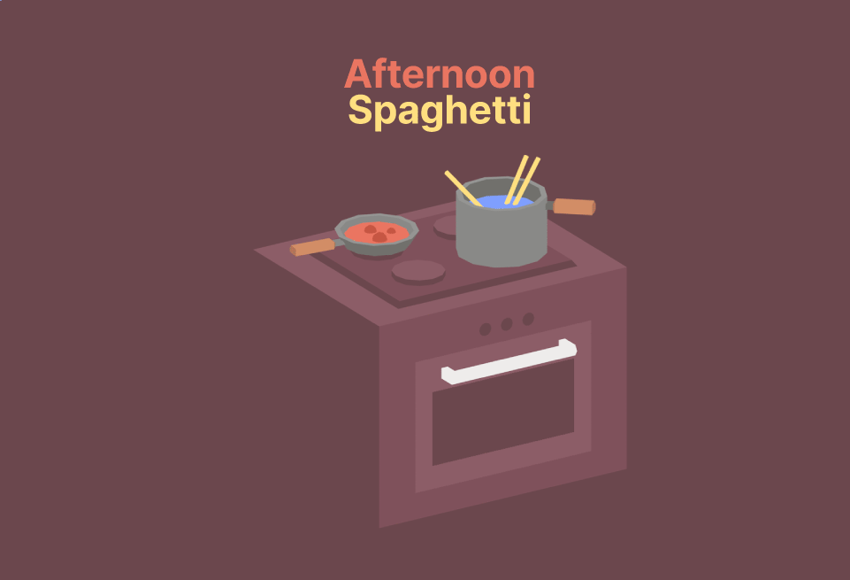
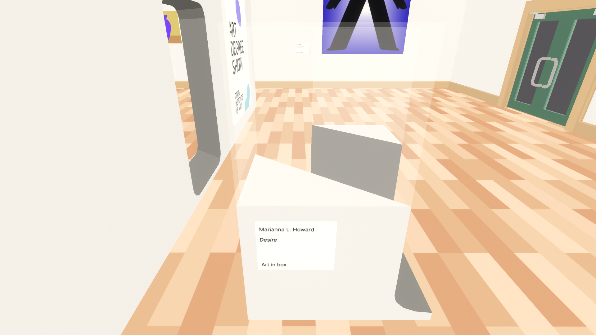
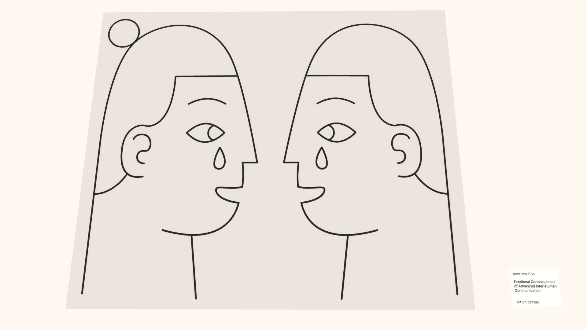

Afternoon Spaghetti Review
The classic tale of cheese, goodwill and transdimensional fridge theft
This game is a masterpiece.
Before you go any farther, I highly recommend playing the game here. It's impossible to say much else without spoiling the entire thing, so here's an excerpt from the developer:
This game only takes a few minutes to complete and is best enjoyed with a refined sense of humour.
This Game Is a Piece of Art
Wait, what?
When I went back to Afternoon Spaghetti's itch.io page, I noticed something that many others like me probably missed: This game was featured at not one, but two art expos. In Crawley 2023, it was in the Pop Up Arcade at Dreamy Place. In Lyon 2025, you could find it at L'exposition interactive, Sauve qui peut la vie #2. While I don't know much about either of these events, just learning this fact has shifted my perspective of the game. It's not just a really high effort joke, it's an exploration of humor through the medium of a video game. During my first playthrough of Afternoon Spaghetti, my attitude towards was the former perspective. But sometimes all you really need to start thinking about something is for somebody else to tell you that that thing is worth thinking about. In other words, the only reason I even started thinking about this game was because somebody said it was art. And is that not a beautiful way to discover art?
This Game Is a Joke
As far as I'm aware, "transdimensional" is not a word.
At first, I assumed that the writer meant "interdimensional", as in between dimensions. This fits with the non-Euclidean gimmick of walking to a student art show through a refrigerator. "Transdimensional", on the other hand, would mean across dimensions, which granted, could definitely be a word, but I'd never heard it before. Word or not, this implies that the art show actually exists in another dimension. This is supported by the differing aesthetics of the art show world, which raises some interesting questions about the game's lore. Why does the fridge lead to other dimensions? Why are the contents of a fridge considered art? Who is Lilli Hampson and why did she steal this particular fridge? None of these questions actually matter, because the game as a whole isn't meant to be taken seriously. In the credits, there isn't even a name on the title card for editor. Right after you deliver the cheese, you are hit with the punchline, the anticlimactic payoff to this farce of a game. And then the credits start rolling. If you rushed to complete the game's one objective, then you just missed the entire game. And then you can't help but laugh.
This Game Is a Short Film
Afternoon Spaghetti really isn't much more than a walking simulator.
There isn't anything to do besides look around and find the cheese. Your dialogue is chosen for you, and each interaction will play out identically each time you boot up the game. The world is bright and colorful, and is only there to serve as eye candy while you walk towards Lilli Hampson's Someone's Fridge. The game starts with a title and ends with credits. Your actions now won't affect the game later. In this way, you are taken out of the game and are relegated to the position of audience member. The story of Afternoon Spaghetti is constant, and could care less about its viewer. Nothing you can do or say will prevent the inevitable end of the game.
The game does feature two songs, "Hey" by Juanitos, which serves as the main theme, as well as "Tropicana Dreams" by Apache Tomcat, which you might hear during the game if you listen closely. For me, "Hey" captures the feeling of falling for a lighthearted joke, similar to getting rickrolled. On the other hand, "Tropicana Dreams" sounds much more nostalgic, and would definitely be playing in a 7-Eleven after time traveling back to your childhood. Overall, these two songs fit well with the gameplay, but aren't super memorable.
This Game Is an Art Show
I think it's worth taking a closer look at some of the art in this game.
Desire by Marianna L. Howard
Desire happens to be one of the victims of Lilli's transdimensional fridge theft, which is also why it's one of my favorites. The tag says "Art in box", but we will never know if there was actually anything in the box because Someone's Fridge cut right through the center of it. Perhaps our innermost desires aren't meant to known, instead they should be hidden behind refrigerators and cut off from existence. Another possible interpretation is that we shouldn't put our desires inside of boxes, rather we must cherish them so nobody can take them away. I think it's great that we don't know what Desire actually is because it leaves a lot more room for interpretation.
Emotional Consequences of Advanced Inter-Human Communication by Andriana Cho
This painting appears to be telling a story.